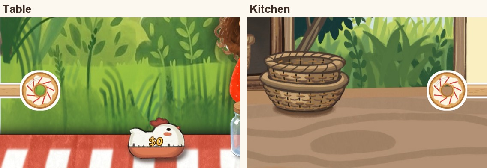
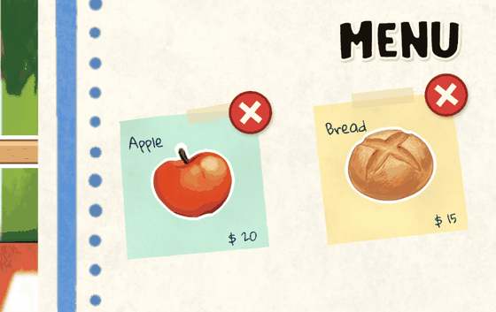
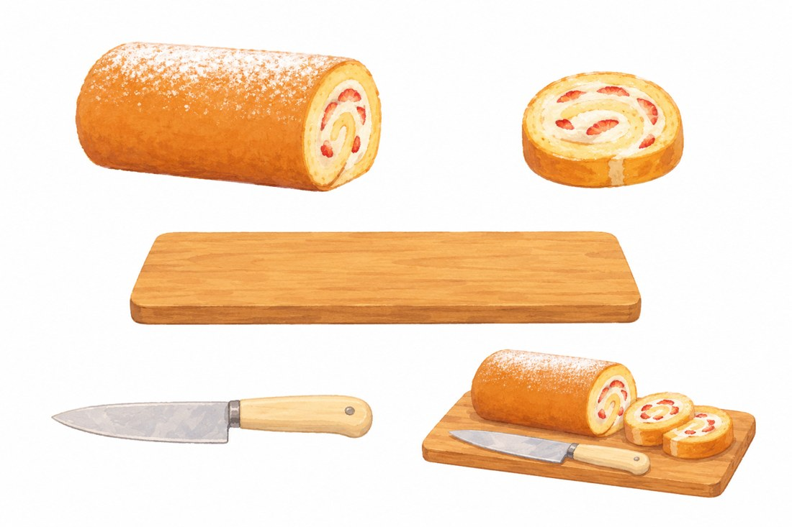
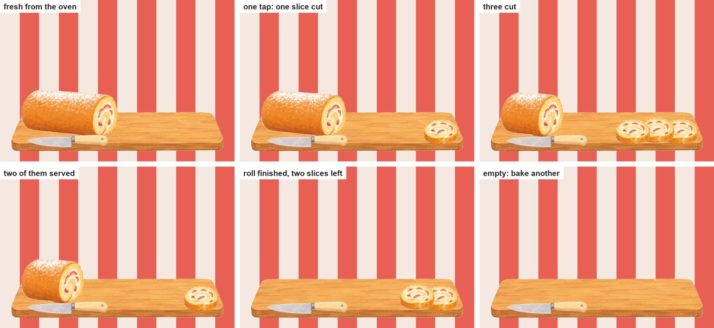

Food Truck Cafe
Your report for 15 November. 26.11.21 (build 28) is in the App Store since 9:00 AM; test build 31 is on TestFlight; today's changes are in no build.


1Next
You
Test build 35 (version 26.11.22) is on TestFlight. It has everything in the MVP list.
To try on the phone: the bigger handle and its wiggle while arranging (from day 2 on); the "Chapter 2 test" button now gives 100 stars to spend.
For the submission I need only your word to submit. Your What's New words are in (MVP, last lines). The star pack goes to Apple's review with it.
Roll cake (Current): look at ChatGPT's art.
Me
Store pictures and video: capturing new ones from the game now; they come here for your look before anything goes to the store.
Chapter 2 background: ChatGPT has no pictures left until 3:49 PM. The brief is written and goes out at 3:53 PM; the result comes here for your tick.
Nothing to Apple's review before your word.
2Q&A
Nothing open.
3Current
Handle bigger, and it wiggles while arranging, 15 November. In build 35.


- It wiggles only on the table and only while arranging; it is still during the day and in the kitchen.
- Test builds only: the "Chapter 2 test" button gives 100 stars to spend. A copy from the App Store has no such button.
Roll cake: ChatGPT's parts and how it would work, 15 November. Not for today's release. No game code yet.


- On the table: a board with the roll and the knife.
- Tap the roll: the knife cuts one slice off its end, with a short cut animation; the slice lies on the board.
- Tap a cut slice: it is served, like a cup at the coffee station. Customers order slices; uncut cake cannot be served.
- When the roll is gone: an oven in the kitchen bakes a new one.
- My picks, yours to change: 6 slices in a roll; 12 seconds to bake.
- I need from you: the shop price, and which chapter it belongs to.
4MVP
Everything for today's release (26.11.22). All of it is in test build 35. The store has 26.11.21 (build 28) since this morning; none of this is in it.
Approved by you:
- Remove Ads can be bought: the $ tab works. Apple approved the purchase today.
- Star pack: 15 stars for $0.99 on the $ tab. Apple reviews it with this version.
- Stars from customers served: 3 stars for everyone served their whole order, 2 for 90 %, 1 for more than half.
- Day-end receipt: the cookie stars pop in one by one.
- No stars on the hen.
- Coffee machine upgrade always brews two cups; the extra cup waits on the machine. Its handle is in front of the cups.
- Kitchen by swipe: swipe right to go in, left to come back; the tutorial teaches both.
- Yoga lady in the star shop, 15 stars: she does yoga in the background and each finished pose gives every waiting customer a flower. In the middle of the lawn in chapter 1, grass in front of her; on a float in chapter 2.
- Star shop: stars can be spent; the shop shows the stars left.
- Sounds: a milk-foaming sound on the coffee machine; quieter coffee pour, pop, blender and coin; a new, quieter order-complete sound.
- Kitchen blender: no blur beside it; shown only once ice cream is owned.
- Patience flowers larger.
- Prices: Choux $800 (was $1000), Strawberry cake $1000 (was $1500).
- Remove Ads card in the same text size as the other cards.
- Restore purchases writes its answer on the button itself.
- Table: food may stand right under the fixed items and lower at the bottom; the ice cream station starts where it can be dragged back to.
- Pull handle (a donut on a stick) instead of the truck, on the table and in the kitchen.
- Two sounds (your picks 3 and 5): chewing when a candy is fed, a pop when a flower grows back.
- The handles can be moved up and down their edge: the table's while arranging, the kitchen's at any time.
In build 35 for your check:
- Handle bigger, wiggling while the table is arranged.
- Shop: an affordable card can no longer look dimmed.
- Menu: no cap on the number of foods.
Not in today's release: the roll cake; the new chapter 2 background.
What's New, your words: Hire new staff. / New sound effects. / Remove ads feature. / New swipe gesture and pulling handle for kitchen.
Still needed for the release: your word to submit.
5Backlog
6Analysis, 14 and 15 November
Read 15 November, 9:15 AM PST, from Unity (first opens of the store copy; days are UTC). Left out: Apple's review run and your own phone. You saw 15 downloads at Apple; Unity shows 14 first opens over the two days, which fits, since a download counts before the first open.
| What happened | Players | Who |
|---|---|---|
| Opened the game for the first time | 14 | 10 Philippines, 3 United States, 1 Vietnam |
| Nothing recorded after opening | 7 | 6 Philippines, 1 Vietnam |
| Left at tutorial step 3, "Tap the bread to serve it" | 2 | United States |
| Finished the tutorial and started day 1 | 5 | 4 Philippines, 1 United States |
| Finished day 1 (on record) | 2 | one of them also finished day 2 |
| Watched an ad | 3 | one each |